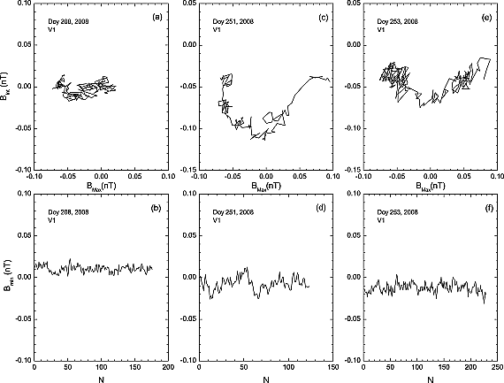

Poster PDF
Main findings
- Solar wind discontinuities evolve in space with occurrence rate decreasing, thickness increasing and current density decreasing with distance from the Sun. And they are probably generated locally beyond 1 AU.
- Background sheared magnetic field plays an important role in determining the efficiency of ion pitch angle scattering, and characterize three ion populations: transient, trapped, regular.
Introduction & Motivation
‘Discontinuities’ are discontinuous spatial changes in plasma parameters/characteristics and magnetic fields (colburn1966?).
 
(söding2001?) studied the radial distribution of discontinuities in the solar wind.


Joint observations of JUNO & ARTEMIS & Other missions really provides a unique opportunity!!!
Method
- We use (liu2022a?) method to identify IDs, which has better compatibility for the IDs with minor field changes.
- Then the minimum variance analysis is applied to each ID event to obtain the boundary normal (LMN) coordinate and extract IDs’ features.
- Hamiltonian model is applied for investigation of ion dynamics in the solar wind discontinuity configuration.
The most generalized form of dimensionless hamiltonian equation for ions in force-free rotational magnetic discontinuities configuration is
\[ H=\frac{1}{2}\left(\frac{1}{6} \alpha^2 c_2 z^3-c_1 z+p_x\right)^2+\frac{p_z^2}{2}+\frac{1}{2}\left(\kappa x-\frac{\alpha z^2}{2}\right)^2 \]
With \(B_l^2+B_m^2=\text { const }\), we have
\[ H=\frac{1}{2}\left(\frac{\alpha^2 z^3}{6 \sqrt{\kappa_m^2+1}}-z \sqrt{\kappa_m^2+1}+p_x\right)^2+\frac{p_z^2}{2}+\frac{1}{2}\left(\kappa_n x-\frac{\alpha z^2}{2}\right)^2 \]
The system has three parameters \[ \kappa_n=\frac{B_n}{B_{l, \max }} \quad \kappa_m=\frac{B_{m, 0}}{B_{l, \max }} \quad \alpha=\frac{l_0}{L}=\frac{\text { gyro radius }}{\text { system length }} \]
Results
{kind=link}
Normalized occurrence rate of IDs drops with the radial distance from the Sun, following 1/r law.


- High energy particle has higher chance to cross uncertainty curve
- High shear magnetic field will make separatrix vanishes and the geometrical jumps of the quasiadiabatic invariant disappear